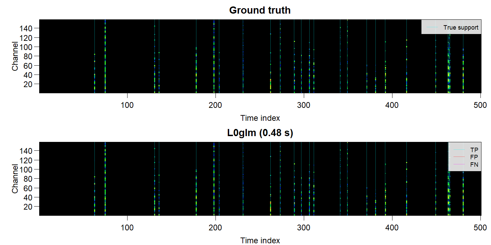
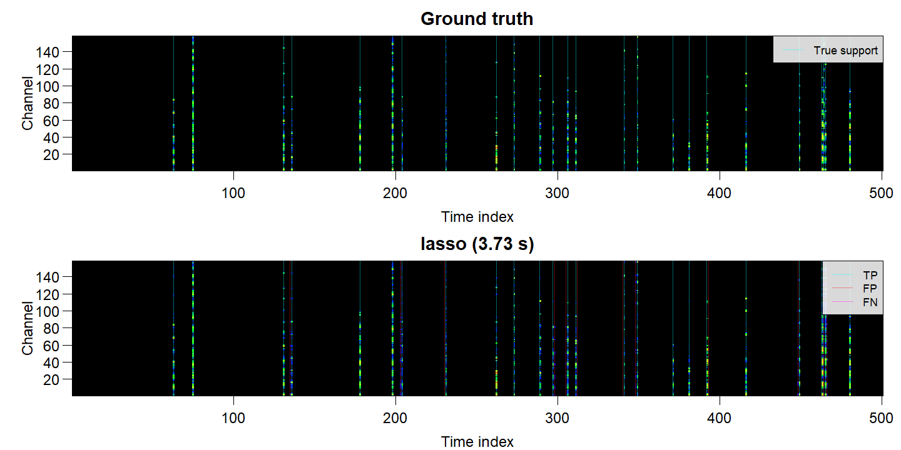
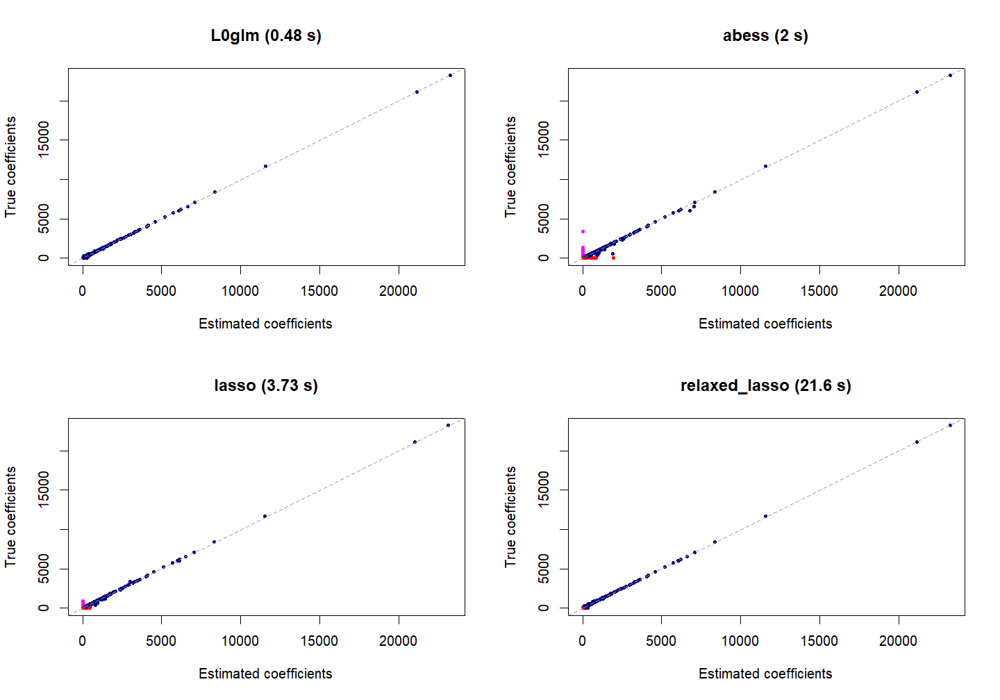

In deconvolution the design contains shifted copies of a point-spread function. Coefficients represent sharp events, while the observed signal is blurred and noisy. For nonnegative Poisson intensities this is an identity-link GLM:
Y_i\sim\operatorname{Poisson}\{(X\beta)_i\},\qquad\beta\geq0.
L0glm fits this likelihood directly. Its native
L0nnpois() backend keeps sparse convolution matrices sparse
and shares them across multichannel OpenMP fits.
Single channel
single <- simul(method=2, n=500L, p=500L, s=.1, seed=2L)
fit <- L0glm.fit(single$X, single$y, family=poisson("identity"),
nonnegative=TRUE, lambda="gic", relaxed=TRUE, parallelize=FALSE)
L0glm.metrics(fit, beta_true=single$beta_true)[
c("gic", "TP", "FP", "FN", "TN", "F1_score", "MCC")]
#> gic TP FP FN TN F1_score MCC
#> 1 4824 43 5 7 445 0.878 0.864Compare with alternative methods using one common scoring interface:
comparison <- sparseglm(single, family=poisson("identity"),
method=c("L0glm", "abess", "lasso", "relaxed_lasso"),
tune="gic", nlambda=10L, nonnegative=TRUE, intercept=FALSE,
approximation="wls", support.size=seq_len(100L),
lambda=list(L0glm=fit$init.lambda), options=list(L0glm=list(relaxed=TRUE)))
L0glm.metrics(comparison)
plot(comparison, which=c(1, 2))The published example below puts the observed and true signal above zero and mirrors each method’s fitted signal and spikes below it. Separate panels make false positives and missed events easy to see.

Multichannel row selection
For several response channels, shared event times correspond to active rows of the coefficient matrix. Within each recovered row, channel coefficients describe the event’s spectrum.
multi <- simul(method=4, n=500L, p=500L, s=.05, seed=2L)
# Retain all mass channels generated by the simulation.
fit_multi <- L0glm.fit(multi$X, multi$y, family=poisson("identity"),
nonnegative=TRUE, lambda="gic", grouped=TRUE, relaxed=TRUE, ncores=2L)
L0glm.metrics(fit_multi, beta_true=multi$beta_true)[c("gic", "TP", "FP", "FN", "TN",
"F1_score", "MCC", "within_row_F1_score", "within_row_MCC")]
#> gic TP FP FN TN F1_score MCC within_row_F1_score within_row_MCC
#> 1 118549 25 0 0 475 1 1 0.946 0.913Row F1 and MCC assess event-time recovery. Within-row F1 and MCC assess the sparsity of channel coefficients among correctly recovered true-positive rows.
plot.sparseglm() can show all coefficients, row averages
or heatmaps. Choose methods using which; heatmaps display
one ground-truth/estimate pair per method.
comparison_multi <- sparseglm(multi, family=poisson("identity"),
method=c("L0glm", "abess", "lasso", "relaxed_lasso"),
tune="gic", nlambda=10L, nonnegative=TRUE, intercept=FALSE,
approximation="wls_grouped", support.size=seq_len(50L),
lambda=list(L0glm=fit_multi$init.lambda), options=list(L0glm=list(relaxed=TRUE)))
plot(comparison_multi, type="heatmap", which=c(1, 3))
plot(comparison_multi, type="coefs", which=1, channels="mean")

Cyan lines identify true-positive event rows, red lines false positives, and magenta lines false negatives. The benchmark tables include the complete comparison and the scoring conventions.

Tune or use native validation
gic <- L0glm.tune(multi$X, multi$y, family=poisson("identity"),
tune="gic", nlambda=10, nonnegative=TRUE, grouped=TRUE, relaxed=TRUE)
cv <- L0glm.tune(multi$X, multi$y, family=poisson("identity"),
tune="cv", nfolds=5, nlambda=10, nonnegative=TRUE, grouped=TRUE, relaxed=TRUE)For held-out checkpoint stopping, supply
validation=list(X=V, y=v); OpenMP remains available through
the native backend. See the validation example.
The L0 deconvolution idea is developed by de Rooi & Eilers
(2011). simul() also supports Gaussian or
negative-binomial noise for blurred spike trains.